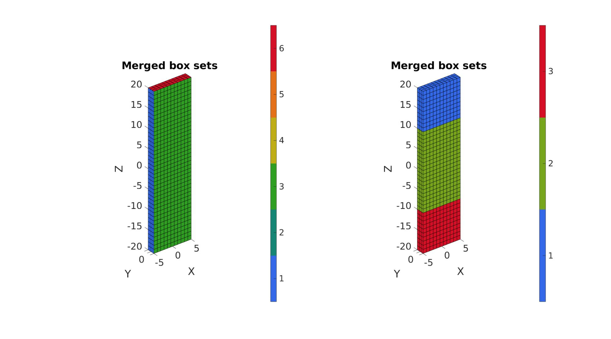
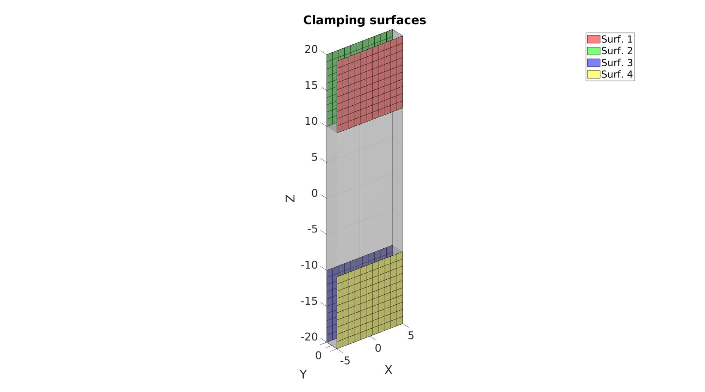
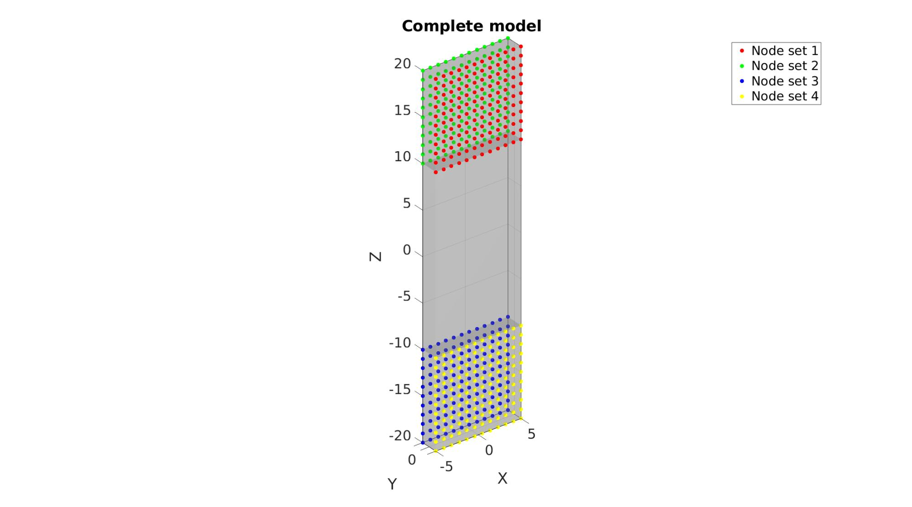
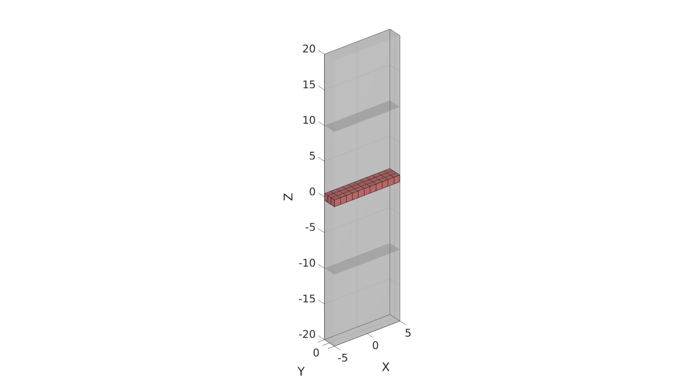

DEMO_febio_0065_clamp_tension_test
Below is a demonstration for: 1) The creation of an FEBio model for clamped tensile testing 2) The use of multiple steps 4) Running an FEBio job with MATLAB 5) Importing FEBio results into MATLAB
Contents
Keywords
- febio_spec version 2.5
- febio, FEBio
- tension, tensile
- displacement control, displacement boundary condition
- Hexahedral hex8
- static, solid
- hyperelastic, Ogden
- displacement logfile
- stress logfile
clear; close all; clc;
Plot settings
fontSize=25;
Control parameters
% Path names defaultFolder = fileparts(fileparts(mfilename('fullpath'))); savePath=fullfile(defaultFolder,'data','temp'); % Defining file names febioFebFileNamePart='tempModel'; febioFebFileName=fullfile(savePath,[febioFebFileNamePart,'.feb']); %FEB file name febioLogFileName=fullfile(savePath,[febioFebFileNamePart,'.txt']); %FEBio log file name febioLogFileName_disp=[febioFebFileNamePart,'_disp_out.txt']; %Log file name for exporting displacement febioLogFileName_strain=[febioFebFileNamePart,'_energy_out.txt']; %Log file name for exporting strain energy density %Specifying dimensions and number of elements pointspacing=1; sampleWidth=10; sampleThickness=2; sampleClampedHeight=sampleWidth; sampleGripGripHeight=sampleWidth.*2; tensileStrain=0.3; clampCompressiveStrain=0.3; %Initial material parameter set c1=1e-3; m1=2; k_factor=100; k=c1*k_factor; % FEA control settings numTimeSteps=10; %Number of time steps desired max_refs=25; %Max reforms max_ups=0; %Set to zero to use full-Newton iterations opt_iter=12; %Optimum number of iterations max_retries=25; %Maximum number of retires dtmin=(1/numTimeSteps)/100; %Minimum time step size dtmax=1/numTimeSteps; %Maximum time step size min_residual=1e-20; symmetric_stiffness=0; runMode='external'; %'internal' or 'external'
Computing derived parameters
numElementsWidth=round(sampleWidth/pointspacing); numElementsWidth=numElementsWidth+iseven(numElementsWidth); %Force uneven so there is a middle element numElementsThickness=round(sampleThickness/pointspacing)+1; numElementsGripGripHeight=round(sampleGripGripHeight/pointspacing); numElementsGripGripHeight=numElementsGripGripHeight+iseven(numElementsGripGripHeight); %Force uneven so there is a middle element numElementsClampedHeight=round(sampleClampedHeight/pointspacing); clampCompressiveDisplacement=(sampleThickness.*clampCompressiveStrain)/2; clampTensionDisplacement=(sampleGripGripHeight.*tensileStrain);
Creating strip region
The region consists of three "boxes" which define the upper and lower clamped regions as well as the central region.
%Create box 1 boxDim=[sampleWidth sampleThickness sampleClampedHeight]; %Dimensions boxEl=[numElementsWidth numElementsThickness numElementsClampedHeight]; %Number of elements [box1]=hexMeshBox(boxDim,boxEl); E1=box1.E; V1=box1.V; F1=box1.F; Fb1=box1.Fb; faceBoundaryMarker1=box1.faceBoundaryMarker; %Create box 3 by copying the first E3=E1; V3=V1; F3=F1; Fb3=Fb1; faceBoundaryMarker3=faceBoundaryMarker1; %Shift first box up V1(:,3)=V1(:,3)+sampleGripGripHeight/2+sampleClampedHeight/2; %Shift third box down V3(:,3)=V3(:,3)-sampleGripGripHeight/2-sampleClampedHeight/2; %Create box 2 boxDim=[sampleWidth sampleThickness sampleGripGripHeight]; %Dimensions boxEl=[numElementsWidth numElementsThickness numElementsGripGripHeight]; %Number of elements [box2]=hexMeshBox(boxDim,boxEl); E2=box2.E; V2=box2.V; F2=box2.F; Fb2=box2.Fb; faceBoundaryMarker2=box2.faceBoundaryMarker;
Merging box sets
%Join color data faceBoundaryMarker_all=[faceBoundaryMarker1; faceBoundaryMarker2; faceBoundaryMarker3;]; faceBoundaryMarker_ind=[ones(size(Fb1,1),1);2*ones(size(Fb2,1),1); 3*ones(size(Fb3,1),1);]; %Join nodes, elements, and faces V=[V1;V2;V3]; E=[E1;E2+size(V1,1);E3+size(V1,1)+size(V2,1)]; F=[F1;F2+size(V1,1);F3+size(V1,1)+size(V2,1)]; Fb=[Fb1;Fb2+size(V1,1);Fb3+size(V1,1)+size(V2,1)]; %Merge nodes [F,V,ind1,ind2]=mergeVertices(F,V); E=ind2(E); Fb=ind2(Fb);
Plotting surface models
cFigure; subplot(1,2,1); hold on; title('Merged box sets','FontSize',fontSize); gpatch(Fb,V,faceBoundaryMarker_all); axisGeom(gca,fontSize); colormap(gca,gjet(250)); icolorbar; subplot(1,2,2); hold on; title('Merged box sets','FontSize',fontSize); gpatch(Fb,V,faceBoundaryMarker_ind); axisGeom(gca,fontSize); colormap(gca,gjet(250)); icolorbar; drawnow;
Define clamping surfaces
logicContactSurf1=faceBoundaryMarker_all==3 & faceBoundaryMarker_ind==1; Fc1=Fb(logicContactSurf1,:); logicContactSurf2=faceBoundaryMarker_all==4 & faceBoundaryMarker_ind==1; Fc2=Fb(logicContactSurf2,:); logicContactSurf3=faceBoundaryMarker_all==4 & faceBoundaryMarker_ind==3; Fc3=Fb(logicContactSurf3,:); logicContactSurf4=faceBoundaryMarker_all==3 & faceBoundaryMarker_ind==3; Fc4=Fb(logicContactSurf4,:);
Visualize clamping surfaces
cFigure; hold on; title('Clamping surfaces','FontSize',fontSize); gpatch(Fb,V,'kw','none',0.25); gpatch(Fc1,V,'rw','k',1); gpatch(Fc2,V,'gw','k',1); gpatch(Fc3,V,'bw','k',1); gpatch(Fc4,V,'yw','k',1); axisGeom(gca,fontSize); camlight headlight; drawnow;
Define BC's
bcPrescribeList1=unique(Fc1(:)); bcPrescribeMagnitudes11=zeros(numel(bcPrescribeList1),3); bcPrescribeMagnitudes11(:,2)=clampCompressiveDisplacement; %In step 1 bcPrescribeMagnitudes12=zeros(numel(bcPrescribeList1),3); bcPrescribeMagnitudes12(:,3)=clampTensionDisplacement; %In step 2 bcPrescribeList2=unique(Fc2(:)); bcPrescribeMagnitudes21=zeros(numel(bcPrescribeList2),3); bcPrescribeMagnitudes21(:,2)=-clampCompressiveDisplacement; %In step 1 bcPrescribeMagnitudes22=zeros(numel(bcPrescribeList2),3); bcPrescribeMagnitudes22(:,3)=clampTensionDisplacement; %In step 2 bcPrescribeList3=unique(Fc3(:)); bcPrescribeMagnitudes31=zeros(numel(bcPrescribeList3),3); bcPrescribeMagnitudes31(:,2)=-clampCompressiveDisplacement; %In step 1 bcPrescribeMagnitudes32=zeros(numel(bcPrescribeList3),3); bcPrescribeList4=unique(Fc4(:)); bcPrescribeMagnitudes41=zeros(numel(bcPrescribeList4),3); bcPrescribeMagnitudes41(:,2)=clampCompressiveDisplacement; %In step 1 bcPrescribeMagnitudes42=zeros(numel(bcPrescribeList4),3); %In step 2
Visualize boundary conditions
cFigure; hold on; title('Complete model','FontSize',fontSize); gpatch(Fb,V,'kw','none',0.25); plotV(V(bcPrescribeList1,:),'r.','MarkerSize',25); plotV(V(bcPrescribeList2,:),'g.','MarkerSize',25); plotV(V(bcPrescribeList3,:),'b.','MarkerSize',25); plotV(V(bcPrescribeList4,:),'y.','MarkerSize',25); axisGeom(gca,fontSize); camlight headlight; drawnow;
Defining the FEBio input structure
See also febioStructTemplate and febioStruct2xml and the FEBio user manual.
%Get a template with default settings [febio_spec]=febioStructTemplate; %febio_spec version febio_spec.ATTR.version='2.5'; %Module section febio_spec.Module.ATTR.type='solid'; %Create control structure for use by all steps stepStruct.Control.analysis.ATTR.type='static'; stepStruct.Control.time_steps=numTimeSteps; stepStruct.Control.step_size=1/numTimeSteps; stepStruct.Control.time_stepper.dtmin=dtmin; stepStruct.Control.time_stepper.dtmax=dtmax; stepStruct.Control.time_stepper.max_retries=max_retries; stepStruct.Control.time_stepper.opt_iter=opt_iter; stepStruct.Control.max_refs=max_refs; stepStruct.Control.max_ups=max_ups; stepStruct.Control.symmetric_stiffness=symmetric_stiffness; stepStruct.Control.min_residual=min_residual; %Add template based default settings to proposed control section [stepStruct.Control]=structComplete(stepStruct.Control,febio_spec.Control,1); %Complement provided with default if missing %Remove control field (part of template) since step specific control sections are used febio_spec=rmfield(febio_spec,'Control'); febio_spec.Step{1}.ATTR.id=1; febio_spec.Step{1}.Control=stepStruct.Control; febio_spec.Step{2}.ATTR.id=2; febio_spec.Step{2}.Control=stepStruct.Control; %Material section febio_spec.Material.material{1}.ATTR.id=1; febio_spec.Material.material{1}.ATTR.name='Normal material'; febio_spec.Material.material{1}.ATTR.type='Ogden'; febio_spec.Material.material{1}.c1=c1; febio_spec.Material.material{1}.m1=m1; febio_spec.Material.material{1}.c2=c1; febio_spec.Material.material{1}.m2=-m1; febio_spec.Material.material{1}.k=k; %Geometry section % -> Nodes febio_spec.Geometry.Nodes{1}.ATTR.name='nodeSet_all'; %The node set name febio_spec.Geometry.Nodes{1}.node.ATTR.id=(1:size(V,1))'; %The node id's febio_spec.Geometry.Nodes{1}.node.VAL=V; %The nodel coordinates % -> Elements febio_spec.Geometry.Elements{1}.ATTR.type='hex8'; %Element type of this set febio_spec.Geometry.Elements{1}.ATTR.mat=1; %material index for this set febio_spec.Geometry.Elements{1}.ATTR.name='Strip'; %Name of the element set febio_spec.Geometry.Elements{1}.elem.VAL=E; febio_spec.Geometry.Elements{1}.elem.ATTR.id=(1:size(E,1))'; %Element material id's % -> NodeSets febio_spec.Geometry.NodeSet{1}.ATTR.name='bcPrescribeList1'; febio_spec.Geometry.NodeSet{1}.node.ATTR.id=bcPrescribeList1(:); febio_spec.Geometry.NodeSet{2}.ATTR.name='bcPrescribeList2'; febio_spec.Geometry.NodeSet{2}.node.ATTR.id=bcPrescribeList2(:); febio_spec.Geometry.NodeSet{3}.ATTR.name='bcPrescribeList3'; febio_spec.Geometry.NodeSet{3}.node.ATTR.id=bcPrescribeList3(:); febio_spec.Geometry.NodeSet{4}.ATTR.name='bcPrescribeList4'; febio_spec.Geometry.NodeSet{4}.node.ATTR.id=bcPrescribeList4(:); %Boundary condition section % -> Prescribe boundary conditions %STEP 1 Clamp compression %Set 1 febio_spec.Step{1}.Boundary.prescribe{1}.ATTR.bc='x'; febio_spec.Step{1}.Boundary.prescribe{1}.ATTR.node_set=febio_spec.Geometry.NodeSet{1}.ATTR.name; febio_spec.Step{1}.Boundary.prescribe{1}.scale.ATTR.lc=1; febio_spec.Step{1}.Boundary.prescribe{1}.scale.VAL=1; febio_spec.Step{1}.Boundary.prescribe{1}.relative=1; febio_spec.Step{1}.Boundary.prescribe{1}.value=bcPrescribeMagnitudes11(:,1); febio_spec.Step{1}.Boundary.prescribe{2}.ATTR.bc='y'; febio_spec.Step{1}.Boundary.prescribe{2}.ATTR.node_set=febio_spec.Geometry.NodeSet{1}.ATTR.name; febio_spec.Step{1}.Boundary.prescribe{2}.scale.ATTR.lc=1; febio_spec.Step{1}.Boundary.prescribe{2}.scale.VAL=1; febio_spec.Step{1}.Boundary.prescribe{2}.relative=1; febio_spec.Step{1}.Boundary.prescribe{2}.value=bcPrescribeMagnitudes11(:,2); febio_spec.Step{1}.Boundary.prescribe{3}.ATTR.bc='z'; febio_spec.Step{1}.Boundary.prescribe{3}.ATTR.node_set=febio_spec.Geometry.NodeSet{1}.ATTR.name; febio_spec.Step{1}.Boundary.prescribe{3}.scale.ATTR.lc=1; febio_spec.Step{1}.Boundary.prescribe{3}.scale.VAL=1; febio_spec.Step{1}.Boundary.prescribe{3}.relative=1; febio_spec.Step{1}.Boundary.prescribe{3}.value=bcPrescribeMagnitudes11(:,3); %Set 2 febio_spec.Step{1}.Boundary.prescribe{4}.ATTR.bc='x'; febio_spec.Step{1}.Boundary.prescribe{4}.ATTR.node_set=febio_spec.Geometry.NodeSet{2}.ATTR.name; febio_spec.Step{1}.Boundary.prescribe{4}.scale.ATTR.lc=1; febio_spec.Step{1}.Boundary.prescribe{4}.scale.VAL=1; febio_spec.Step{1}.Boundary.prescribe{4}.relative=1; febio_spec.Step{1}.Boundary.prescribe{4}.value=bcPrescribeMagnitudes21(:,1); febio_spec.Step{1}.Boundary.prescribe{5}.ATTR.bc='y'; febio_spec.Step{1}.Boundary.prescribe{5}.ATTR.node_set=febio_spec.Geometry.NodeSet{2}.ATTR.name; febio_spec.Step{1}.Boundary.prescribe{5}.scale.ATTR.lc=1; febio_spec.Step{1}.Boundary.prescribe{5}.scale.VAL=1; febio_spec.Step{1}.Boundary.prescribe{5}.relative=1; febio_spec.Step{1}.Boundary.prescribe{5}.value=bcPrescribeMagnitudes21(:,2); febio_spec.Step{1}.Boundary.prescribe{6}.ATTR.bc='z'; febio_spec.Step{1}.Boundary.prescribe{6}.ATTR.node_set=febio_spec.Geometry.NodeSet{2}.ATTR.name; febio_spec.Step{1}.Boundary.prescribe{6}.scale.ATTR.lc=1; febio_spec.Step{1}.Boundary.prescribe{6}.scale.VAL=1; febio_spec.Step{1}.Boundary.prescribe{6}.relative=1; febio_spec.Step{1}.Boundary.prescribe{6}.value=bcPrescribeMagnitudes21(:,3); %Set 3 febio_spec.Step{1}.Boundary.prescribe{7}.ATTR.bc='x'; febio_spec.Step{1}.Boundary.prescribe{7}.ATTR.node_set=febio_spec.Geometry.NodeSet{3}.ATTR.name; febio_spec.Step{1}.Boundary.prescribe{7}.scale.ATTR.lc=1; febio_spec.Step{1}.Boundary.prescribe{7}.scale.VAL=1; febio_spec.Step{1}.Boundary.prescribe{7}.relative=1; febio_spec.Step{1}.Boundary.prescribe{7}.value=bcPrescribeMagnitudes31(:,1); febio_spec.Step{1}.Boundary.prescribe{8}.ATTR.bc='y'; febio_spec.Step{1}.Boundary.prescribe{8}.ATTR.node_set=febio_spec.Geometry.NodeSet{3}.ATTR.name; febio_spec.Step{1}.Boundary.prescribe{8}.scale.ATTR.lc=1; febio_spec.Step{1}.Boundary.prescribe{8}.scale.VAL=1; febio_spec.Step{1}.Boundary.prescribe{8}.relative=1; febio_spec.Step{1}.Boundary.prescribe{8}.value=bcPrescribeMagnitudes31(:,2); febio_spec.Step{1}.Boundary.prescribe{9}.ATTR.bc='z'; febio_spec.Step{1}.Boundary.prescribe{9}.ATTR.node_set=febio_spec.Geometry.NodeSet{3}.ATTR.name; febio_spec.Step{1}.Boundary.prescribe{9}.scale.ATTR.lc=1; febio_spec.Step{1}.Boundary.prescribe{9}.scale.VAL=1; febio_spec.Step{1}.Boundary.prescribe{9}.relative=1; febio_spec.Step{1}.Boundary.prescribe{9}.value=bcPrescribeMagnitudes31(:,3); %Set 4 febio_spec.Step{1}.Boundary.prescribe{10}.ATTR.bc='x'; febio_spec.Step{1}.Boundary.prescribe{10}.ATTR.node_set=febio_spec.Geometry.NodeSet{4}.ATTR.name; febio_spec.Step{1}.Boundary.prescribe{10}.scale.ATTR.lc=1; febio_spec.Step{1}.Boundary.prescribe{10}.scale.VAL=1; febio_spec.Step{1}.Boundary.prescribe{10}.relative=1; febio_spec.Step{1}.Boundary.prescribe{10}.value=bcPrescribeMagnitudes41(:,1); febio_spec.Step{1}.Boundary.prescribe{11}.ATTR.bc='y'; febio_spec.Step{1}.Boundary.prescribe{11}.ATTR.node_set=febio_spec.Geometry.NodeSet{4}.ATTR.name; febio_spec.Step{1}.Boundary.prescribe{11}.scale.ATTR.lc=1; febio_spec.Step{1}.Boundary.prescribe{11}.scale.VAL=1; febio_spec.Step{1}.Boundary.prescribe{11}.relative=1; febio_spec.Step{1}.Boundary.prescribe{11}.value=bcPrescribeMagnitudes41(:,2); febio_spec.Step{1}.Boundary.prescribe{12}.ATTR.bc='z'; febio_spec.Step{1}.Boundary.prescribe{12}.ATTR.node_set=febio_spec.Geometry.NodeSet{4}.ATTR.name; febio_spec.Step{1}.Boundary.prescribe{12}.scale.ATTR.lc=1; febio_spec.Step{1}.Boundary.prescribe{12}.scale.VAL=1; febio_spec.Step{1}.Boundary.prescribe{12}.relative=1; febio_spec.Step{1}.Boundary.prescribe{12}.value=bcPrescribeMagnitudes41(:,3); %STEP 2 Tension %Set 1 febio_spec.Step{2}.Boundary.prescribe{1}.ATTR.bc='x'; febio_spec.Step{2}.Boundary.prescribe{1}.ATTR.node_set=febio_spec.Geometry.NodeSet{1}.ATTR.name; febio_spec.Step{2}.Boundary.prescribe{1}.scale.ATTR.lc=2; febio_spec.Step{2}.Boundary.prescribe{1}.scale.VAL=1; febio_spec.Step{2}.Boundary.prescribe{1}.relative=1; febio_spec.Step{2}.Boundary.prescribe{1}.value=bcPrescribeMagnitudes12(:,1); febio_spec.Step{2}.Boundary.prescribe{2}.ATTR.bc='y'; febio_spec.Step{2}.Boundary.prescribe{2}.ATTR.node_set=febio_spec.Geometry.NodeSet{1}.ATTR.name; febio_spec.Step{2}.Boundary.prescribe{2}.scale.ATTR.lc=2; febio_spec.Step{2}.Boundary.prescribe{2}.scale.VAL=1; febio_spec.Step{2}.Boundary.prescribe{2}.relative=1; febio_spec.Step{2}.Boundary.prescribe{2}.value=bcPrescribeMagnitudes12(:,2); febio_spec.Step{2}.Boundary.prescribe{3}.ATTR.bc='z'; febio_spec.Step{2}.Boundary.prescribe{3}.ATTR.node_set=febio_spec.Geometry.NodeSet{1}.ATTR.name; febio_spec.Step{2}.Boundary.prescribe{3}.scale.ATTR.lc=2; febio_spec.Step{2}.Boundary.prescribe{3}.scale.VAL=1; febio_spec.Step{2}.Boundary.prescribe{3}.relative=1; febio_spec.Step{2}.Boundary.prescribe{3}.value=bcPrescribeMagnitudes12(:,3); %Set 2 febio_spec.Step{2}.Boundary.prescribe{4}.ATTR.bc='x'; febio_spec.Step{2}.Boundary.prescribe{4}.ATTR.node_set=febio_spec.Geometry.NodeSet{2}.ATTR.name; febio_spec.Step{2}.Boundary.prescribe{4}.scale.ATTR.lc=2; febio_spec.Step{2}.Boundary.prescribe{4}.scale.VAL=1; febio_spec.Step{2}.Boundary.prescribe{4}.relative=1; febio_spec.Step{2}.Boundary.prescribe{4}.value=bcPrescribeMagnitudes22(:,1); febio_spec.Step{2}.Boundary.prescribe{5}.ATTR.bc='y'; febio_spec.Step{2}.Boundary.prescribe{5}.ATTR.node_set=febio_spec.Geometry.NodeSet{2}.ATTR.name; febio_spec.Step{2}.Boundary.prescribe{5}.scale.ATTR.lc=2; febio_spec.Step{2}.Boundary.prescribe{5}.scale.VAL=1; febio_spec.Step{2}.Boundary.prescribe{5}.relative=1; febio_spec.Step{2}.Boundary.prescribe{5}.value=bcPrescribeMagnitudes22(:,2); febio_spec.Step{2}.Boundary.prescribe{6}.ATTR.bc='z'; febio_spec.Step{2}.Boundary.prescribe{6}.ATTR.node_set=febio_spec.Geometry.NodeSet{2}.ATTR.name; febio_spec.Step{2}.Boundary.prescribe{6}.scale.ATTR.lc=2; febio_spec.Step{2}.Boundary.prescribe{6}.scale.VAL=1; febio_spec.Step{2}.Boundary.prescribe{6}.relative=1; febio_spec.Step{2}.Boundary.prescribe{6}.value=bcPrescribeMagnitudes22(:,3); %Set 3 febio_spec.Step{2}.Boundary.prescribe{7}.ATTR.bc='x'; febio_spec.Step{2}.Boundary.prescribe{7}.ATTR.node_set=febio_spec.Geometry.NodeSet{3}.ATTR.name; febio_spec.Step{2}.Boundary.prescribe{7}.scale.ATTR.lc=2; febio_spec.Step{2}.Boundary.prescribe{7}.scale.VAL=1; febio_spec.Step{2}.Boundary.prescribe{7}.relative=1; febio_spec.Step{2}.Boundary.prescribe{7}.value=bcPrescribeMagnitudes32(:,1); febio_spec.Step{2}.Boundary.prescribe{8}.ATTR.bc='y'; febio_spec.Step{2}.Boundary.prescribe{8}.ATTR.node_set=febio_spec.Geometry.NodeSet{3}.ATTR.name; febio_spec.Step{2}.Boundary.prescribe{8}.scale.ATTR.lc=2; febio_spec.Step{2}.Boundary.prescribe{8}.scale.VAL=1; febio_spec.Step{2}.Boundary.prescribe{8}.relative=1; febio_spec.Step{2}.Boundary.prescribe{8}.value=bcPrescribeMagnitudes32(:,2); febio_spec.Step{2}.Boundary.prescribe{9}.ATTR.bc='z'; febio_spec.Step{2}.Boundary.prescribe{9}.ATTR.node_set=febio_spec.Geometry.NodeSet{3}.ATTR.name; febio_spec.Step{2}.Boundary.prescribe{9}.scale.ATTR.lc=2; febio_spec.Step{2}.Boundary.prescribe{9}.scale.VAL=1; febio_spec.Step{2}.Boundary.prescribe{9}.relative=1; febio_spec.Step{2}.Boundary.prescribe{9}.value=bcPrescribeMagnitudes32(:,3); %Set 4 febio_spec.Step{2}.Boundary.prescribe{10}.ATTR.bc='x'; febio_spec.Step{2}.Boundary.prescribe{10}.ATTR.node_set=febio_spec.Geometry.NodeSet{4}.ATTR.name; febio_spec.Step{2}.Boundary.prescribe{10}.scale.ATTR.lc=2; febio_spec.Step{2}.Boundary.prescribe{10}.scale.VAL=1; febio_spec.Step{2}.Boundary.prescribe{10}.relative=1; febio_spec.Step{2}.Boundary.prescribe{10}.value=bcPrescribeMagnitudes42(:,1); febio_spec.Step{2}.Boundary.prescribe{11}.ATTR.bc='y'; febio_spec.Step{2}.Boundary.prescribe{11}.ATTR.node_set=febio_spec.Geometry.NodeSet{4}.ATTR.name; febio_spec.Step{2}.Boundary.prescribe{11}.scale.ATTR.lc=2; febio_spec.Step{2}.Boundary.prescribe{11}.scale.VAL=1; febio_spec.Step{2}.Boundary.prescribe{11}.relative=1; febio_spec.Step{2}.Boundary.prescribe{11}.value=bcPrescribeMagnitudes42(:,2); febio_spec.Step{2}.Boundary.prescribe{12}.ATTR.bc='z'; febio_spec.Step{2}.Boundary.prescribe{12}.ATTR.node_set=febio_spec.Geometry.NodeSet{4}.ATTR.name; febio_spec.Step{2}.Boundary.prescribe{12}.scale.ATTR.lc=2; febio_spec.Step{2}.Boundary.prescribe{12}.scale.VAL=1; febio_spec.Step{2}.Boundary.prescribe{12}.relative=1; febio_spec.Step{2}.Boundary.prescribe{12}.value=bcPrescribeMagnitudes42(:,3); %LoadData section febio_spec.LoadData.loadcurve{1}.ATTR.id=1; febio_spec.LoadData.loadcurve{1}.ATTR.type='linear'; febio_spec.LoadData.loadcurve{1}.point.VAL=[0 0; 1 1]; febio_spec.LoadData.loadcurve{2}.ATTR.id=2; febio_spec.LoadData.loadcurve{2}.ATTR.type='linear'; febio_spec.LoadData.loadcurve{2}.point.VAL=[0 0; 1 0; 2 1]; %Output section % -> log file febio_spec.Output.logfile.ATTR.file=febioLogFileName; febio_spec.Output.logfile.node_data{1}.ATTR.file=febioLogFileName_disp; febio_spec.Output.logfile.node_data{1}.ATTR.data='ux;uy;uz'; febio_spec.Output.logfile.node_data{1}.ATTR.delim=','; febio_spec.Output.logfile.node_data{1}.VAL=1:size(V,1); febio_spec.Output.logfile.element_data{1}.ATTR.file=febioLogFileName_strain; febio_spec.Output.logfile.element_data{1}.ATTR.data='Ez'; febio_spec.Output.logfile.element_data{1}.ATTR.delim=','; febio_spec.Output.logfile.element_data{1}.VAL=1:1:size(E,1);
Quick viewing of the FEBio input file structure
The febView function can be used to view the xml structure in a MATLAB figure window.
febView(febio_spec); %Viewing the febio file
Exporting the FEBio input file
Exporting the febio_spec structure to an FEBio input file is done using the febioStruct2xml function.
febioStruct2xml(febio_spec,febioFebFileName); %Exporting to file and domNode
Running the FEBio analysis
To run the analysis defined by the created FEBio input file the runMonitorFEBio function is used. The input for this function is a structure defining job settings e.g. the FEBio input file name. The optional output runFlag informs the user if the analysis was run succesfully.
febioAnalysis.run_filename=febioFebFileName; %The input file name febioAnalysis.run_logname=febioLogFileName; %The name for the log file febioAnalysis.disp_on=1; %Display information on the command window febioAnalysis.disp_log_on=1; %Display convergence information in the command window febioAnalysis.runMode=runMode; febioAnalysis.t_check=0.25; %Time for checking log file (dont set too small) febioAnalysis.maxtpi=1e99; %Max analysis time febioAnalysis.maxLogCheckTime=10; %Max log file checking time [runFlag]=runMonitorFEBio(febioAnalysis);%START FEBio NOW!!!!!!!!
%%%%%%%%%%%%%%%%%%%%%%%%%%%%%%%%%%%%%%%%%%%%% --- STARTING FEBIO JOB --- 10-Aug-2020 10:31:29 Waiting for log file... Proceeding to check log file...10-Aug-2020 10:31:29 ------- converged at time : 0.1 ------- converged at time : 0.2 ------- converged at time : 0.3 ------- converged at time : 0.4 ------- converged at time : 0.5 ------- converged at time : 0.6 ------- converged at time : 0.7 ------- converged at time : 0.8 ------- converged at time : 0.9 ------- converged at time : 1 ------- converged at time : 1.1 ------- converged at time : 1.2 ------- converged at time : 1.3 ------- converged at time : 1.4 ------- converged at time : 1.5 ------- converged at time : 1.6 ------- converged at time : 1.7 ------- converged at time : 1.8 ------- converged at time : 1.9 ------- converged at time : 2 --- Done --- 10-Aug-2020 10:31:35
Import FEBio results
if runFlag==1 %i.e. a succesful run
Importing nodal displacements from a log file
[time_mat, N_disp_mat,~]=importFEBio_logfile(fullfile(savePath,febioLogFileName_disp)); %Nodal displacements time_mat=[0; time_mat(:)]; %Time N_disp_mat=N_disp_mat(:,2:end,:); sizImport=size(N_disp_mat); sizImport(3)=sizImport(3)+1; N_disp_mat_n=zeros(sizImport); N_disp_mat_n(:,:,2:end)=N_disp_mat; N_disp_mat=N_disp_mat_n; DN=N_disp_mat(:,:,end); DN_magnitude=sqrt(sum(DN(:,3).^2,2)); V_DEF=N_disp_mat+repmat(V,[1 1 size(N_disp_mat,3)]);
Importing element strain energies from a log file
[~,E_strain,~]=importFEBio_logfile(fullfile(savePath,febioLogFileName_strain)); %Element strain energy %Remove nodal index column E_strain=E_strain(:,2:end,:); %Add initial state i.e. zero energy sizImport=size(E_strain); sizImport(3)=sizImport(3)+1; E_energy_mat_n=zeros(sizImport); E_energy_mat_n(:,:,2:end)=E_strain; E_strain=E_energy_mat_n; [F,CF]=element2patch(E,E_strain(:,:,1)); CF_V=faceToVertexMeasure(F,V,CF);
Plotting the simulated results using anim8 to visualize and animate deformations
axLim=[min(min(V_DEF,[],3),[],1); max(max(V_DEF,[],3),[],1)];
indBc=[bcPrescribeList1;bcPrescribeList2;bcPrescribeList3;bcPrescribeList4;];
% Create basic view and store graphics handle to initiate animation
hf=cFigure; hold on;%Open figure
gtitle([febioFebFileNamePart,': Press play to animate']);
hp1=gpatch(Fb,V_DEF(:,:,end),CF_V,'k',1);
hp1.FaceColor='interp';
hp2=plotV(V(indBc,:),'k.','MarkerSize',25);
axisGeom(gca,fontSize);
colormap(warmcold(250)); colorbar;
caxis([-tensileStrain tensileStrain]);
axis(axLim(:)'); %Set axis limits statically
camlight headlight; axis off;
% Set up animation features
animStruct.Time=time_mat; %The time vector
for qt=1:1:size(N_disp_mat,3) %Loop over time increments
V_def=V+N_disp_mat(:,:,qt); %Current nodal coordinates
[~,CF]=element2patch(E,E_strain(:,:,qt));
CF_V=faceToVertexMeasure(F,V,CF);
%Set entries in animation structure
animStruct.Handles{qt}=[hp1 hp1 hp2 hp2 hp2]; %Handles of objects to animate
animStruct.Props{qt}={'Vertices','CData','XData','YData','ZData'}; %Properties of objects to animate
animStruct.Set{qt}={V_def,CF_V,V_def(indBc,1),V_def(indBc,2),V_def(indBc,3)}; %Property values for to set in order to animate
end
anim8(hf,animStruct); %Initiate animation feature
gdrawnow;
 end

GIBBON www.gibboncode.org
Kevin Mattheus Moerman, gibbon.toolbox@gmail.com
GIBBON footer text
License: https://github.com/gibbonCode/GIBBON/blob/master/LICENSE
GIBBON: The Geometry and Image-based Bioengineering add-On. A toolbox for image segmentation, image-based modeling, meshing, and finite element analysis.
Copyright (C) 2006-2020 Kevin Mattheus Moerman
This program is free software: you can redistribute it and/or modify it under the terms of the GNU General Public License as published by the Free Software Foundation, either version 3 of the License, or (at your option) any later version.
This program is distributed in the hope that it will be useful, but WITHOUT ANY WARRANTY; without even the implied warranty of MERCHANTABILITY or FITNESS FOR A PARTICULAR PURPOSE. See the GNU General Public License for more details.
You should have received a copy of the GNU General Public License along with this program. If not, see http://www.gnu.org/licenses/.